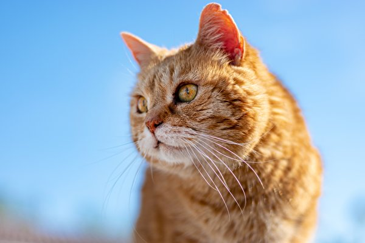
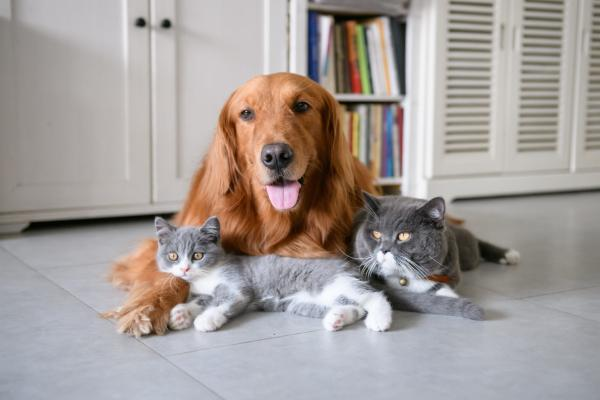

Gatos
Al adoptar un gato no sólo le das una oportunidad para vivir, si no , estás salvando su vida, ya que, muchos de ellos se encuentran mal, son condenados a vivir en el abandono o son sacrificados.
Go somewhere.jpeg)
Perros
Brindas una segunda oportunidad de ser feliz a un ser sintiente, que ha sufrido el abandono, maltrato o la indiferencia del ser humano. La adopción disminuye la sobrepoblación de animales.
Go somewhere 
Ambos
Todos los animales necesitan una segunda oportunidad. Muchos han sido abandonados o perdidos, así que, con la adopción, le estás dando una nueva vida con protección y cariño.
Go somewhere